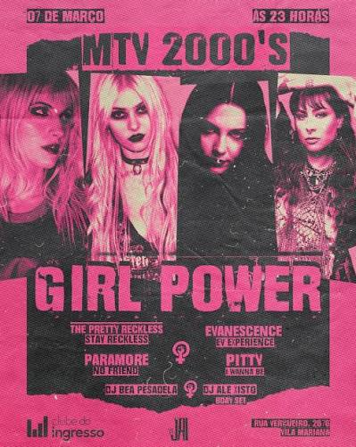
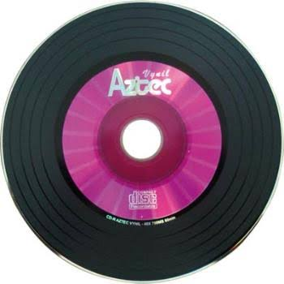

O SOM DOS ANOS 2000 BRILHO, GLAMOUR E POP
A ERA DE OURO DA MTV
De divas do pop com calças de cintura baixa a hits que marcaram época no Discman. Os anos 2000 trouxeram uma revolução colorida, cheia de strass, coreografias marcantes e produções futuristas que inspiram gerações até hoje. Prepare o gloss, ajuste o fone de ouvido e volte no tempo com os maiores ícones daquela década!


